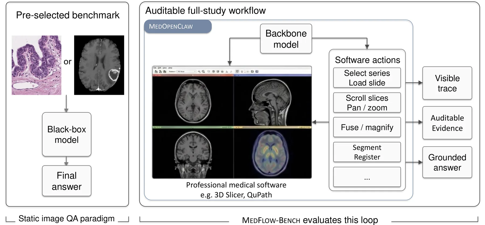
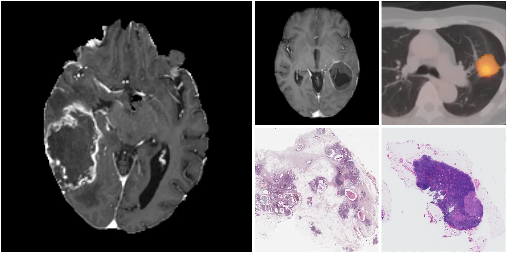

MedOpenClaw
A runtime that lets AI agents operate 3D Slicer and QuPath on complete radiology studies and whole-slide images. Every action is recorded and can be replayed.
MedCUAProjects

A runtime that lets AI agents operate 3D Slicer and QuPath on complete radiology studies and whole-slide images. Every action is recorded and can be replayed.

A benchmark of 1,459 cases in five task families across radiology and pathology. An answer only counts when the evidence behind it is also correct.
MedOpenClaw and MedFlowBench: Auditing Medical Agents in Full-Study Workflows. Weixiang Shen, Chengzhi Shen, Yanzhu Hu, Che Liu, Junde Wu, Jiayuan Zhu, Xiao Han, Zongyue Li, Jingpei Wu, Min Xu, Daguang Xu, Yueming Jin, Benedikt Wiestler, Daniel Rueckert and Jiazhen Pan. arXiv, 2026.
@article{shen2026medopenclaw,
title = {MedOpenClaw and MedFlowBench: Auditing Medical Agents in Full-Study Workflows},
author = {Shen, Weixiang and Shen, Chengzhi and Hu, Yanzhu and Liu, Che and Wu, Junde and Zhu, Jiayuan and Han, Xiao and Li, Zongyue and Wu, Jingpei and Xu, Min and Xu, Daguang and Jin, Yueming and Wiestler, Benedikt and Rueckert, Daniel and Pan, Jiazhen},
journal = {arXiv preprint arXiv:2603.24649},
year = {2026}
}